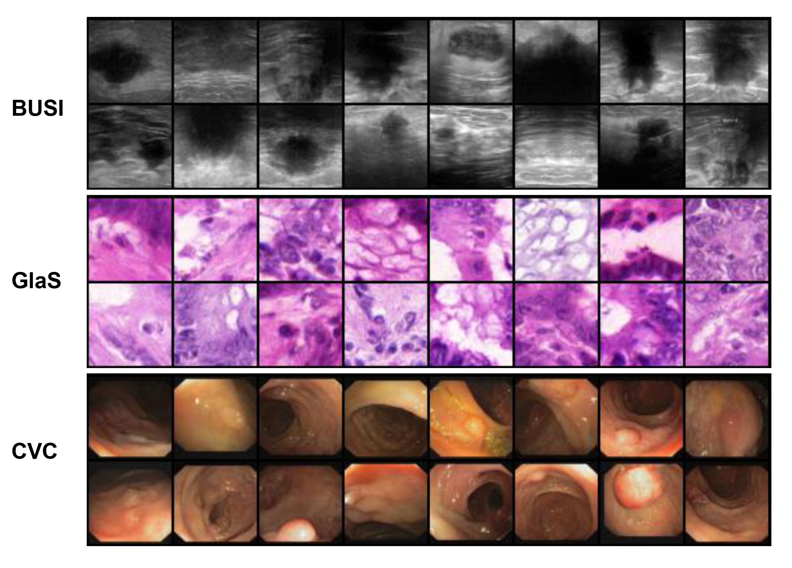

Network

Overview of U-KAN pipeline. After feature extraction by several convolution stages, the
intermediate maps are tokenized and processed by stacked KAN layers. The time embedding is only
injected into the KAN blocks when applied for Diffusion U-KAN.
Segmentation Results
Visual Results
Quantitative Results


Generative Results

Citation
@article{li2024endora,
author = {Chenxin Li and Xinyu Liu and Wuyang Li and Cheng Wang and Hengyu Liu and Yixuan Yuan},
title = {U-KAN Makes Strong Backbone for Medical Image Segmentation and Generation},
journal = {arXiv preprint},
year = {2024}
}